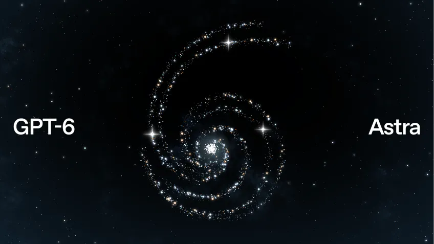

OpenAI lança o GPT-6 Astra

OpenAI apresentou o GPT-6 Astra, novo modelo da família GPT. Segundo a empresa, o modelo traz avanços em uso de computadores e navegadores, engenharia de software, cibersegurança, ciência e tarefas profissionais. A OpenAI também afirma que o modelo está sendo disponibilizado gradualmente para organizações e usuários de determinados planos.
O GPT‑6 Astra reúne anos de pesquisa e grandes apostas em pré-treinamento, aprendizado por reforço e alinhamento. O Astra está na vanguarda do uso do computador, da navegação na web, da engenharia de software, da cibersegurança, da ciência e do trabalho profissional. O Astra atinge praticamente o limite do FrontierMath Tier 4, com pontuação de 98%, e já ajudou a resolver problemas matemáticos que permaneciam em aberto há muito tempo. Ele também atinge praticamente o limite do ARC-AGI-3, com pontuação de 99,9%, e o limite do ExploitBench, com 100%. Além disso, estabelece um novo patamar no uso do computador e do navegador, realizando os trabalhos profissionais mais exigentes com velocidade, precisão e discernimento sem precedentes.
O GPT‑6 Astra começa a ser disponibilizado hoje para um grupo limitado de organizações e, nos próximos dias, estará disponível para todos os usuários do ChatGPT Plus, Pro, Business e Enterprise, além de ser oferecido pela API da OpenAI, pelo Microsoft Azure e pelo AWS Bedrock.
"No ARC-AGI-3, o Astra superou nossa referência humana de eficiência de ações em 96% dos níveis, efetivamente equiparando-se ao desempenho humano no benchmark. Além de ser o melhor modelo que já testamos, ele representa um salto significativo no desempenho dos modelos de ponta, não só na capacidade de explorar e resolver ambientes inéditos, mas também na eficiência com que aprende a fazer isso." Greg Kamradt, ARC Prize Foundation